，把损失函数关于 的梯度记为
，把损失函数关于 的梯度记为  。η 表示学习率，实际上会取 0.01 或 0.001 这些事先决定好的值。式子中的←表示用右边的值更新左边的值。如式（6.1）所示，SGD 是朝着梯度方向只前进一定距离的简单方法。现在，我们将 SGD 实现为一个 Python 类（为方便后面使用，我们将其实现为一个名为
。η 表示学习率，实际上会取 0.01 或 0.001 这些事先决定好的值。式子中的←表示用右边的值更新左边的值。如式（6.1）所示，SGD 是朝着梯度方向只前进一定距离的简单方法。现在，我们将 SGD 实现为一个 Python 类（为方便后面使用，我们将其实现为一个名为 SGD 的类）。神经网络的学习的目的是找到使损失函数的值尽可能小的参数。这是寻找最优参数的问题，解决这个问题的过程称为最优化（optimization）。遗憾的是，神经网络的最优化问题非常难。这是因为参数空间非常复杂，无法轻易找到最优解（无法使用那种通过解数学式一下子就求得最小值的方法）。而且，在深度神经网络中，参数的数量非常庞大，导致最优化问题更加复杂。
在前几章中，为了找到最优参数，我们将参数的梯度（导数）作为了线索。使用参数的梯度，沿梯度方向更新参数，并重复这个步骤多次，从而逐渐靠近最优参数，这个过程称为随机梯度下降法（stochastic gradient descent），简称 SGD。SGD 是一个简单的方法，不过比起胡乱地搜索参数空间，也算是“聪明”的方法。但是，根据不同的问题，也存在比 SGD 更加聪明的方法。本节我们将指出 SGD 的缺点，并介绍 SGD 以外的其他最优化方法。
进入正题前，我们先打一个比方，来说明关于最优化我们所处的状况。
有一个性情古怪的探险家。他在广袤的干旱地带旅行，坚持寻找幽深的山谷。他的目标是要到达最深的谷底（他称之为“至深之地”）。这也是他旅行的目的。并且，他给自己制定了两个严格的“规定”：一个是不看地图；另一个是把眼睛蒙上。因此，他并不知道最深的谷底在这个广袤的大地的何处，而且什么也看不见。在这么严苛的条件下，这位探险家如何前往“至深之地”呢？他要如何迈步，才能迅速找到“至深之地”呢？
寻找最优参数时，我们所处的状况和这位探险家一样，是一个漆黑的世界。我们必须在没有地图、不能睁眼的情况下，在广袤、复杂的地形中寻找“至深之地”。大家可以想象这是一个多么难的问题。
在这么困难的状况下，地面的坡度显得尤为重要。探险家虽然看不到周围的情况，但是能够知道当前所在位置的坡度（通过脚底感受地面的倾斜状况）。于是，朝着当前所在位置的坡度最大的方向前进，就是 SGD 的策略。勇敢的探险家心里可能想着只要重复这一策略，总有一天可以到达“至深之地”。
让大家感受了最优化问题的难度之后，我们再来复习一下 SGD。用数学式可以将 SGD 写成如下的式（6.1）。
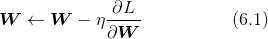
这里把需要更新的权重参数记为 ，把损失函数关于 的梯度记为 。η 表示学习率，实际上会取 0.01 或 0.001 这些事先决定好的值。式子中的←表示用右边的值更新左边的值。如式（6.1）所示，SGD 是朝着梯度方向只前进一定距离的简单方法。现在，我们将 SGD 实现为一个 Python 类（为方便后面使用，我们将其实现为一个名为 SGD 的类）。
class SGD:
def __init__(self, lr=0.01):
self.lr = lr
def update(self, params, grads):
for key in params.keys():
params[key] -= self.lr * grads[key]
这里，进行初始化时的参数 lr 表示 learning rate（学习率）。这个学习率会保存为实例变量。此外，代码段中还定义了 update(params, grads) 方法，这个方法在 SGD 中会被反复调用。参数 params 和 grads（与之前的神经网络的实现一样）是字典型变量，按 params['W1']、grads['W1'] 的形式，分别保存了权重参数和它们的梯度。
使用这个 SGD 类，可以按如下方式进行神经网络的参数的更新（下面的代码是不能实际运行的伪代码）。
network = TwoLayerNet(...)
optimizer = SGD()
for i in range(10000):
...
x_batch, t_batch = get_mini_batch(...) # mini-batch
grads = network.gradient(x_batch, t_batch)
params = network.params
optimizer.update(params, grads)
...
这里首次出现的变量名 optimizer 表示“进行最优化的人”的意思，这里由 SGD 承担这个角色。参数的更新由 optimizer 负责完成。我们在这里需要做的只是将参数和梯度的信息传给 optimizer。
像这样，通过单独实现进行最优化的类，功能的模块化变得更简单。比如，后面我们马上会实现另一个最优化方法 Momentum，它同样会实现成拥有 update(params, grads) 这个共同方法的形式。这样一来，只需要将 optimizer = SGD() 这一语句换成 optimizer = Momentum()，就可以从 SGD 切换为 Momentum。
很多深度学习框架都实现了各种最优化方法，并且提供了可以简单切换这些方法的构造。比如 Lasagne 深度学习框架，在
updates.py这个文件中以函数的形式集中实现了最优化方法。用户可以从中选择自己想用的最优化方法。
虽然 SGD 简单，并且容易实现，但是在解决某些问题时可能没有效率。这里，在指出 SGD 的缺点之际，我们来思考一下求下面这个函数的最小值的问题。
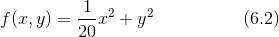
如图 6-1 所示，式（6.2）表示的函数是向 x 轴方向延伸的“碗”状函数。实际上，式（6.2）的等高线呈向 x 轴方向延伸的椭圆状。
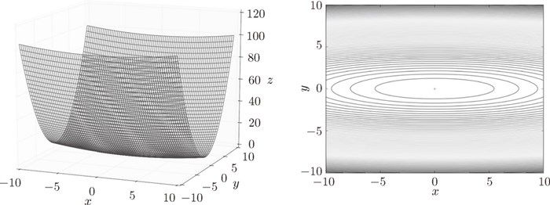
图 6-1 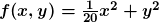 的图形（左图）和它的等高线（右图）
现在看一下式（6.2）表示的函数的梯度。如果用图表示梯度的话，则如图 6-2 所示。这个梯度的特征是，y 轴方向上大，x 轴方向上小。换句话说，就是 y 轴方向的坡度大，而 x 轴方向的坡度小。这里需要注意的是，虽然式 (6.2) 的最小值在 (x, y) = (0, 0) 处，但是图 6-2 中的梯度在很多地方并没有指向 (0, 0)。
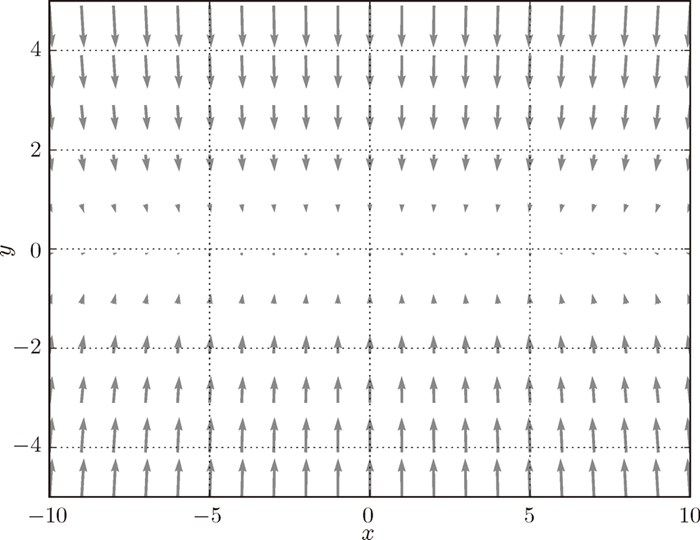
图 6-2 的梯度
我们来尝试对图 6-1 这种形状的函数应用 SGD。从 (x, y) = (-7.0, 2.0) 处（初始值）开始搜索，结果如图 6-3 所示。
在图 6-3 中，SGD 呈“之”字形移动。这是一个相当低效的路径。也就是说，SGD 的缺点是，如果函数的形状非均向（anisotropic），比如呈延伸状，搜索的路径就会非常低效。因此，我们需要比单纯朝梯度方向前进的 SGD 更聪明的方法。SGD 低效的根本原因是，梯度的方向并没有指向最小值的方向。
为了改正SGD的缺点，下面我们将介绍Momentum、AdaGrad、Adam这 3 种方法来取代SGD。我们会简单介绍各个方法，并用数学式和Python进行实现。
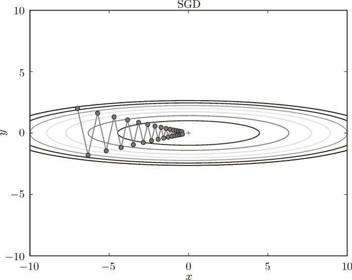
图 6-3 基于 SGD 的最优化的更新路径：呈“之”字形朝最小值 (0, 0) 移动，效率低
Momentum 是“动量”的意思，和物理有关。用数学式表示 Momentum 方法，如下所示。
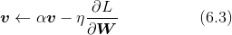
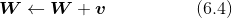
和前面的 SGD 一样， 表示要更新的权重参数， 表示损失函数关于 的梯度，η 表示学习率。这里新出现了一个变量 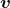，对应物理上的速度。式（6.3）表示了物体在梯度方向上受力，在这个力的作用下，物体的速度增加这一物理法则。如图 6-4 所示，Momentum 方法给人的感觉就像是小球在地面上滚动。
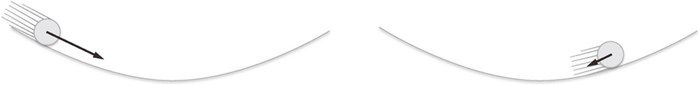
图 6-4 Momentum：小球在斜面上滚动
式（6.3）中有 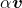 这一项。在物体不受任何力时，该项承担使物体逐渐减速的任务（α 设定为 0.9 之类的值），对应物理上的地面摩擦或空气阻力。下面是 Momentum 的代码实现（源代码在 common/optimizer.py 中）。
class Momentum:
def __init__(self, lr=0.01, momentum=0.9):
self.lr = lr
self.momentum = momentum
self.v = None
def update(self, params, grads):
if self.v is None:
self.v = {}
for key, val in params.items():
self.v[key] = np.zeros_like(val)
for key in params.keys():
self.v[key] = self.momentum*self.v[key] - self.lr*grads[key]
params[key] += self.v[key]
实例变量 v 会保存物体的速度。初始化时，v 中什么都不保存，但当第一次调用 update() 时，v 会以字典型变量的形式保存与参数结构相同的数据。剩余的代码部分就是将式（6.3）、式（6.4）写出来，很简单。
现在尝试使用 Momentum 解决式（6.2）的最优化问题，如图 6-5 所示。
图 6-5 中，更新路径就像小球在碗中滚动一样。和 SGD 相比，我们发现“之”字形的“程度”减轻了。这是因为虽然 x 轴方向上受到的力非常小，但是一直在同一方向上受力，所以朝同一个方向会有一定的加速。反过来，虽然 y 轴方向上受到的力很大，但是因为交互地受到正方向和反方向的力，它们会互相抵消，所以 y 轴方向上的速度不稳定。因此，和 SGD 时的情形相比，可以更快地朝 x 轴方向靠近，减弱“之”字形的变动程度。
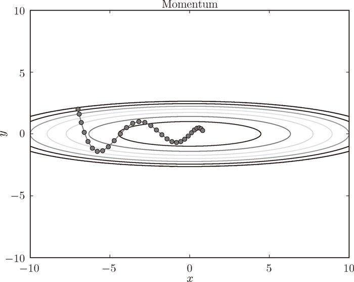
图 6-5 基于 Momentum 的最优化的更新路径
在神经网络的学习中，学习率（数学式中记为 η）的值很重要。学习率过小，会导致学习花费过多时间；反过来，学习率过大，则会导致学习发散而不能正确进行。
在关于学习率的有效技巧中，有一种被称为学习率衰减（learning rate decay）的方法，即随着学习的进行，使学习率逐渐减小。实际上，一开始“多”学，然后逐渐“少”学的方法，在神经网络的学习中经常被使用。
逐渐减小学习率的想法，相当于将“全体”参数的学习率值一起降低。而 AdaGrad [6] 进一步发展了这个想法，针对“一个一个”的参数，赋予其“定制”的值。
AdaGrad 会为参数的每个元素适当地调整学习率，与此同时进行学习（AdaGrad 的 Ada 来自英文单词 Adaptive，即“适当的”的意思）。下面，让我们用数学式表示 AdaGrad 的更新方法。
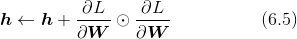
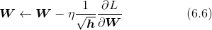
和前面的 SGD 一样， 表示要更新的权重参数， 表示损失函数关于 的梯度，η 表示学习率。这里新出现了变量 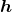，如式 (6.5) 所示，它保存了以前的所有梯度值的平方和（式（6.5）中的 表示对应矩阵元素的乘法）。然后，在更新参数时，通过乘以 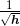，就可以调整学习的尺度。这意味着，参数的元素中变动较大（被大幅更新）的元素的学习率将变小。也就是说，可以按参数的元素进行学习率衰减，使变动大的参数的学习率逐渐减小。
现在来实现 AdaGrad。AdaGrad 的实现过程如下所示（源代码在 common/optimizer.py 中）。
class AdaGrad:
def __init__(self, lr=0.01):
self.lr = lr
self.h = None
def update(self, params, grads):
if self.h is None:
self.h = {}
for key, val in params.items():
self.h[key] = np.zeros_like(val)
for key in params.keys():
self.h[key] += grads[key] * grads[key]
params[key] -= self.lr * grads[key] / (np.sqrt(self.h[key]) + 1e-7)
这里需要注意的是，最后一行加上了微小值 1e-7。这是为了防止当 self.h[key] 中有 0 时，将 0 用作除数的情况。在很多深度学习的框架中，这个微小值也可以设定为参数，但这里我们用的是 1e-7 这个固定值。
现在，让我们试着使用 AdaGrad 解决式（6.2）的最优化问题，结果如图 6-6 所示。
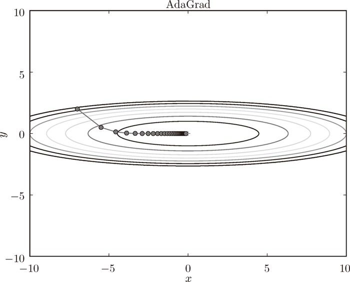
图 6-6 基于 AdaGrad 的最优化的更新路径
由图 6-6 的结果可知，函数的取值高效地向着最小值移动。由于 y 轴方向上的梯度较大，因此刚开始变动较大，但是后面会根据这个较大的变动按比例进行调整，减小更新的步伐。因此，y 轴方向上的更新程度被减弱，“之”字形的变动程度有所衰减。
Momentum 参照小球在碗中滚动的物理规则进行移动，AdaGrad 为参数的每个元素适当地调整更新步伐。如果将这两个方法融合在一起会怎么样呢？这就是 Adam[8] 方法的基本思路 1。
1这里关于 Adam 方法的说明只是一个直观的说明，并不完全正确。详细内容请参考原作者的论文。
Adam 是 2015 年提出的新方法。它的理论有些复杂，直观地讲，就是融合了 Momentum 和 AdaGrad 的方法。通过组合前面两个方法的优点，有望实现参数空间的高效搜索。此外，进行超参数的“偏置校正”也是 Adam 的特征。这里不再进行过多的说明，详细内容请参考原作者的论文 [8]。关于 Python 的实现，common/optimizer.py 中将其实现为了 Adam 类，有兴趣的读者可以参考。
现在，我们试着使用 Adam 解决式（6.2）的最优化问题，结果如图 6-7 所示。
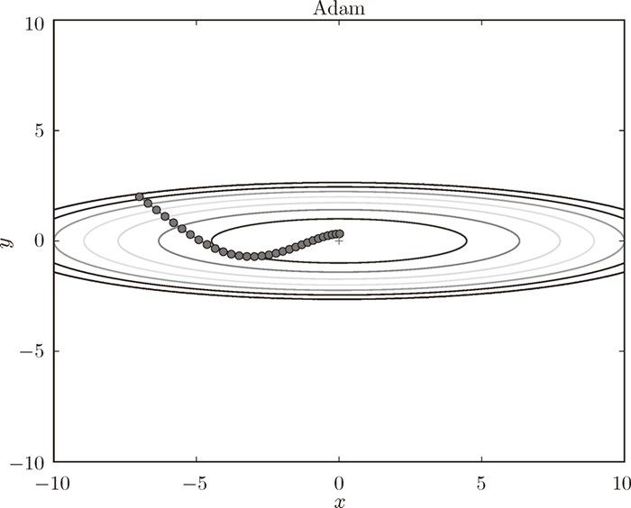
图 6-7 基于 Adam 的最优化的更新路径
在图 6-7 中，基于 Adam 的更新过程就像小球在碗中滚动一样。虽然 Momentun 也有类似的移动，但是相比之下，Adam 的小球左右摇晃的程度有所减轻。这得益于学习的更新程度被适当地调整了。
到目前为止，我们已经学习了 4 种更新参数的方法。这里我们来比较一下这 4 种方法（源代码在 ch06/optimizer_compare_naive.py 中）。
如图 6-8 所示，根据使用的方法不同，参数更新的路径也不同。只看这个图的话，AdaGrad 似乎是最好的，不过也要注意，结果会根据要解决的问题而变。并且，很显然，超参数（学习率等）的设定值不同，结果也会发生变化。
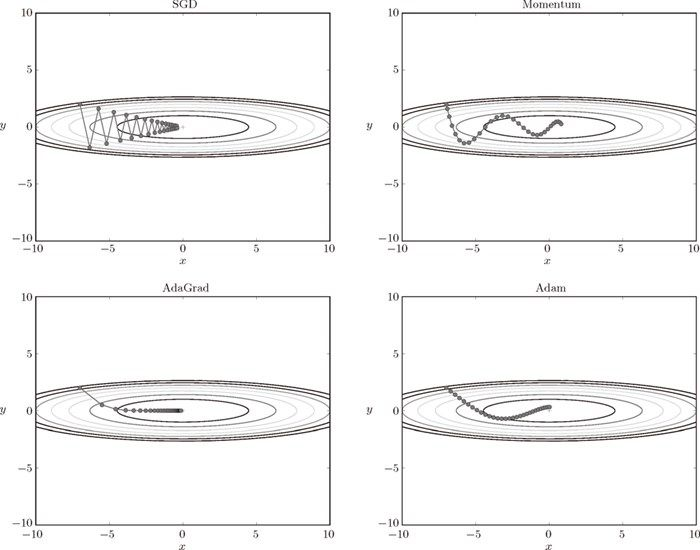
图 6-8 最优化方法的比较：SGD、Momentum、AdaGrad、Adam
上面我们介绍了 SGD、Momentum、AdaGrad、Adam 这 4 种方法，那么用哪种方法好呢？非常遗憾，（目前）并不存在能在所有问题中都表现良好的方法。这 4 种方法各有各的特点，都有各自擅长解决的问题和不擅长解决的问题。
很多研究中至今仍在使用 SGD。Momentum 和 AdaGrad 也是值得一试的方法。最近，很多研究人员和技术人员都喜欢用 Adam。本书将主要使用 SGD 或者 Adam，读者可以根据自己的喜好多多尝试。
我们以手写数字识别为例，比较前面介绍的 SGD、Momentum、AdaGrad、Adam 这 4 种方法，并确认不同的方法在学习进展上有多大程度的差异。先来看一下结果，如图 6-9 所示（源代码在 ch06/optimizer_compare_mnist.py 中）。
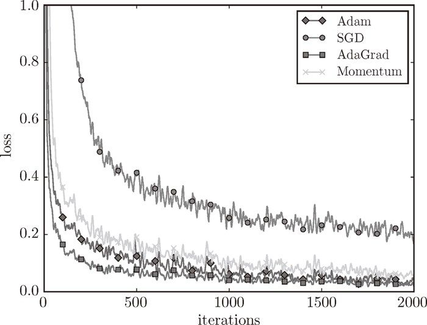
图 6-9 基于 MNIST 数据集的 4 种更新方法的比较：横轴表示学习的迭代次数（iteration），纵轴表示损失函数的值（loss）
这个实验以一个 5 层神经网络为对象，其中每层有 100 个神经元。激活函数使用的是 ReLU。
从图 6-9 的结果中可知，与 SGD 相比，其他 3 种方法学习得更快，而且速度基本相同，仔细看的话，AdaGrad 的学习进行得稍微快一点。这个实验需要注意的地方是，实验结果会随学习率等超参数、神经网络的结构（几层深等）的不同而发生变化。不过，一般而言，与 SGD 相比，其他 3 种方法可以学习得更快，有时最终的识别精度也更高。